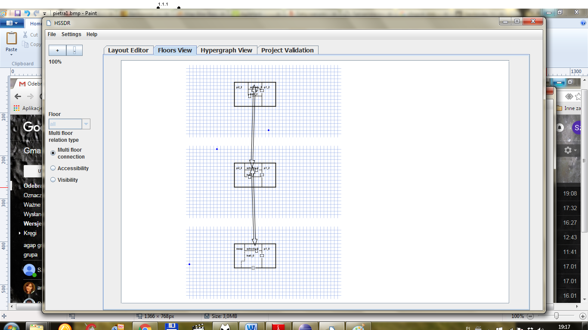

Symbols available in test:

- -logic:
- -forall, exists, in, :, forall, <=>, (), =, >=, <=, !=, and, or, #
- -design:
- -adjacent(room1, room2): if rooms are directly adjacent
- -accessible(room1, room2): if rooms are directly accessible
- -Rooms(room): if argument is a room
- -type(room): get set type of a room
- -Doors(doors): if argument is a door
- -doorsInRoom(doors, room): if doors belong to room
- -doorsDist(doors1, doors2): distance between doors1 and doors2 in meters
- -area(room): area of room in square meters
- -Sensors(sensor): if argument is a sensor
- -sensorInRoom(sensor, room): if sensor is in room
- -surveilledDoors(doors): if doors are watched by a sensor
- -isPassageWatched(doors1,doors2): if it is impossible to get from doors1 and doors2
- -without entering a sensor range, doors1 and doors2 are situated in one room